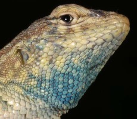
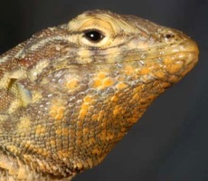
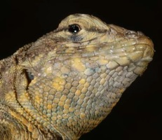

Investigating genes that have large phenotypic effects is important both for understanding genetic mechanisms as well for learning how major changes in traits can evolve. Detailed genetic studies have primarily focused on model organisms, but new DNA sequencing techniques make it possible to expand genetic association studies to non-model organisms. One such non-model species is the side-blotched lizard (Uta stansburiana), which exhibits a well characterized genetic polymorphism. Side-blotched lizards can exhibit three distinct male mating types within a population, which differ in behavior, coloration, and hormone levels. Pedigree analysis suggests that these mating types result from the action of a single gene with three alleles. However, the identity of the gene involved in determining the mating types of U. stansburiana remains unknown. In collaboration with Rasmus Nielsen at U.C. Berkeley and Barry Sinervo at U.C. Santa Cruz, I am investigating the genetic basis of the different mating types using next-generation sequencing methods. Specifically, I am will design a microarray to capture the coding sequence within the genome of U. stansburiana (the exome). I will then compare the exomes of multiple individuals from each of the three mating types found in side-blotched lizards. I will then test for associations between mating type and the genetic variants observed in the exomes. If successful, this project will reveal a gene that can cause large changes in behavior and physiology of a vertebrate organism.




The genetics of polymorphic mating systems